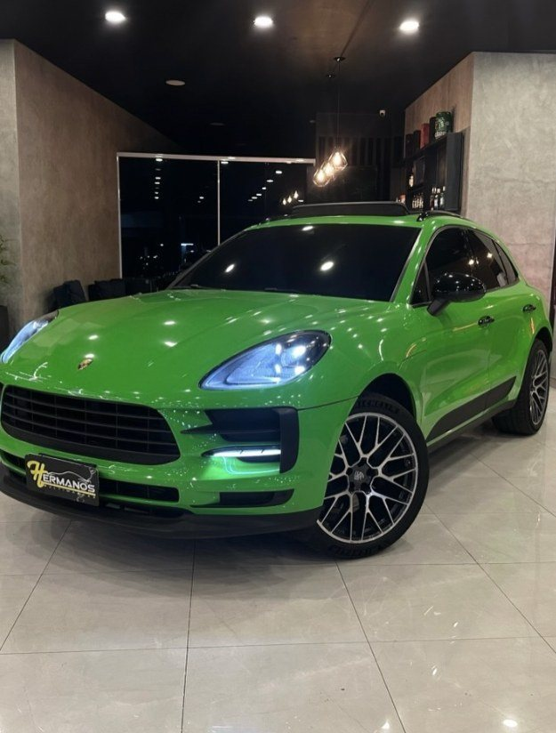
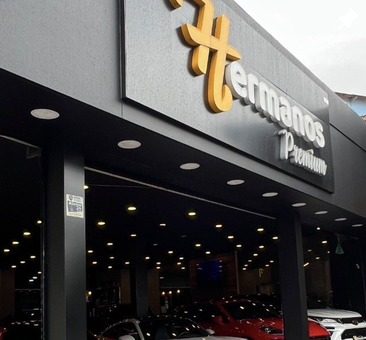
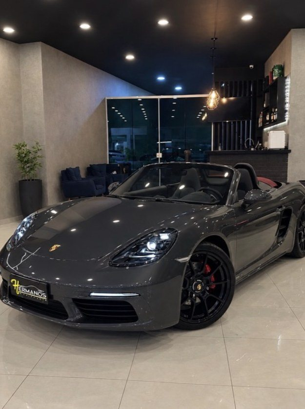
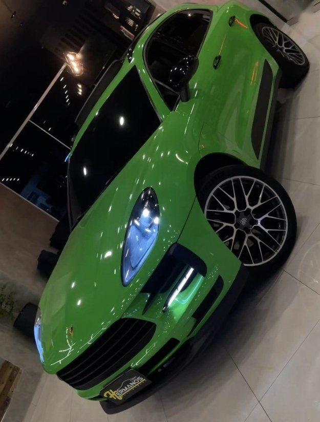
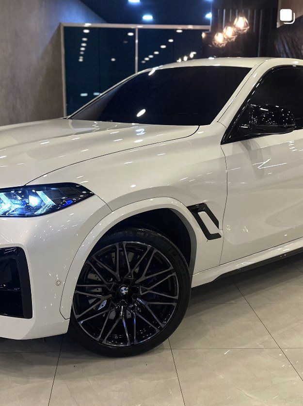
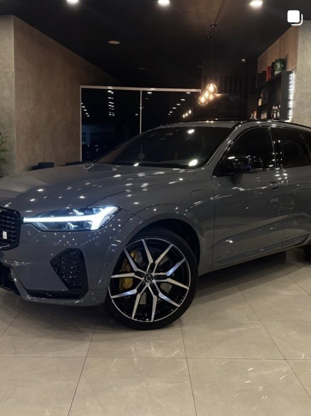
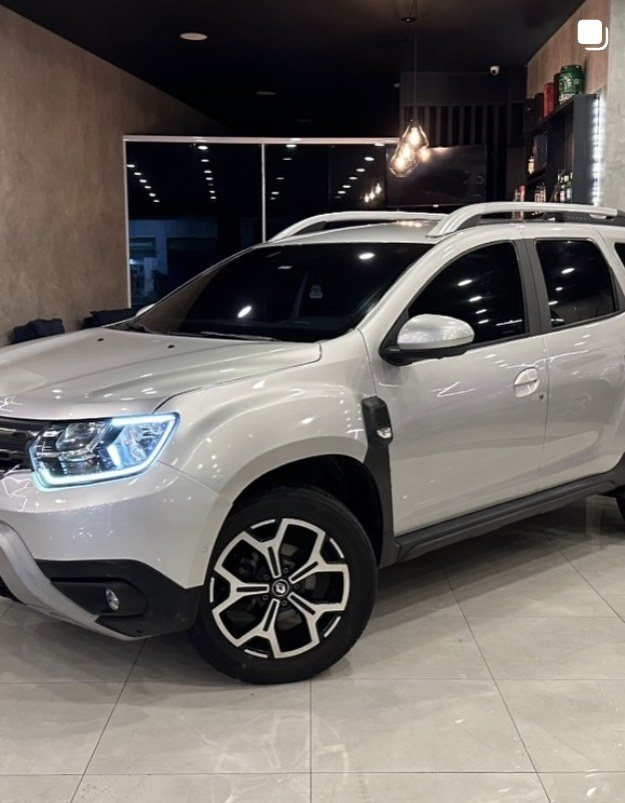
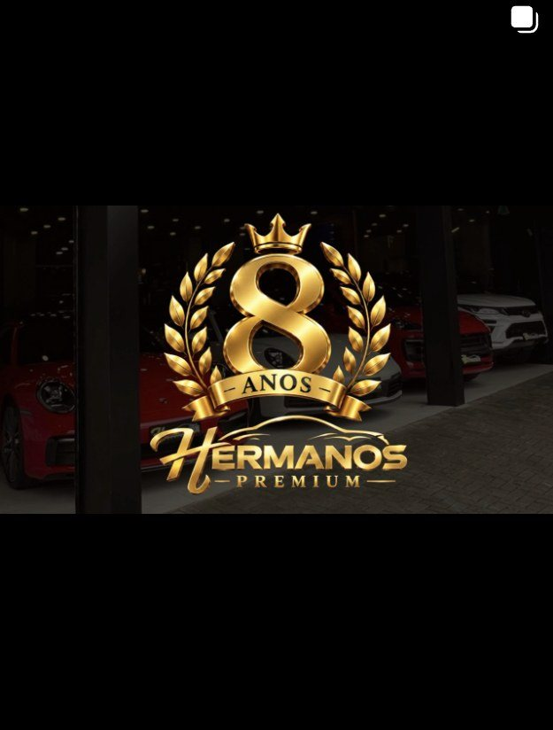

Hermanos Premium e Hermanos Multimarcas · outubro de 2026
O showroom já é um estúdio. O digital pode mostrar isso inteiro.
Gregory, obrigado por abrir a loja na terça, e ao Nigel pela ponte. Saí de lá com algumas anotações sobre o que a Hermanos já faz bem e pode render mais com ajustes pequenos.
Organizamos tudo aqui, com exemplos tirados dos próprios perfis de vocês, para servir de base para a equipe. Nada disso pede loja nova, câmera nova ou gente a mais.



Os cinco pontos
Um story de carro que só poderia ser da Hermanos
Story montado em modelo pronto tem um efeito colateral: o seguidor reconhece o modelo antes de reconhecer a loja. Quem acompanha várias lojas vê a mesma moldura e o mesmo brilho em dezenas de carros e aprende a passar para o próximo.
Com um estoque que tem Macan GTS, 718 Boxster e 911, o melhor material de vocês é o carro real dentro do showroom real. A proposta é dar a esse material uma gramática fixa, que o seguidor reconhece de longe, e variar o tipo de tela de carro para carro.
O que fica fixo e o que muda
Fica fixo, decidido uma vez
- Preto e dourado da marca, e nenhuma outra cor de destaque
- Uma fonte para o nome do carro e outra para os dados
- O logo sempre no mesmo canto, pequeno
- Placa coberta com o tampa-placa da Hermanos, que vocês já usam
- Valor sempre ao lado do km
Muda de carro para carro
- O tipo de tela: chegada, galeria, detalhe, ficha, conversa
- A ordem e a quantidade de telas, conforme o carro pede
- O detalhe escolhido para o close
- A pergunta da enquete
Uma sequência de cinco telas para um carro
Simulação com fotos que já estão no perfil de vocês. Os dados aparecem como campos, porque entram da ficha real de cada carro.

FarolVocê levaria em qual cor?
Régua para a equipe
- Foto da lojaSempre o carro real no showroom de vocês. Cenário inventado e carro gerado por IA são o que deixa o story com cara de modelo pronto.
- Pouco textoAs lojas premium grandes não colocam caixa de texto em cima do carro. A marca aparece no cenário e numa assinatura discreta.
- Uma ideia por telaSe a tela precisa dizer duas coisas, viram duas telas.
- Dado com origemAno, km, valor e opcionais só entram se vierem da ficha do carro. Story com km errado custa mais do que story sem km.
- Sem repetir telaNa mesma sequência, nenhum tipo de tela aparece duas vezes.
Como saber se está funcionando
Nas estatísticas de cada story, o Instagram mostra quantas pessoas responderam, tocaram no link e saíram em cada tela. Se a segunda tela perde muita gente, é ela que muda na próxima rodada. Depois de algumas semanas, a equipe sabe qual sequência faz o WhatsApp tocar.
O carro inteiro na grade do perfil
Desde janeiro de 2025 o Instagram mostra a grade do perfil em retângulos verticais, na proporção 3:4. Foto feita em outro formato é aparada nas laterais quando entra ali, e em carro o corte cai na frente, na traseira ou nas duas.




Quadros como aparecem hoje em @hermanospremium e @hermanosmultimarcas_, vistos em outubro de 2026.
Por que isso pesa
A grade é a vitrine de quem já se interessou. Quem chega por anúncio ou indicação rola o perfil antes de chamar no WhatsApp, e ali cada quadro funciona como a capa do carro. No feed, um post vertical ocupa mais tela do celular do que um quadrado ou um horizontal, e fica mais tempo na frente de quem está rolando.
Quanto da largura da foto aparece na grade
A grade mantém a altura da foto e corta a largura até chegar em 3:4.
O padrão de post
- Exportar em 1080 × 1440.
É o maior formato vertical que o feed aceita e aparece inteiro na grade.
- Fotografar com folga dos lados.
O carro ocupa perto de 80% da largura do quadro. Um passo para trás na hora da foto resolve, e o showroom de vocês tem espaço para isso.
- A primeira foto do carrossel é a capa.
Dianteira 3/4, frente para a esquerda, carro inteiro e reto. As outras fotos vêm depois.
- Escolher a capa dos Reels.
Os vídeos gravados com a câmera inclinada viram carros tortos na grade. Ao publicar, troque a capa pela foto reta do mesmo carro.
- Arte também nasce vertical.
Aniversário, comunicado ou evento: a peça já sai em 3:4, com o texto no centro.
O carro apresentado por quem vende
Hoje os carros aparecem no perfil em edits: música, detalhe, movimento de câmera. Eles criam desejo e devem continuar. O que ainda não existe é o vídeo em que alguém da Hermanos apresenta o carro falando, do jeito que faria com o cliente no showroom.
Quem compra seminovo desse valor quer saber de onde o carro veio, quanto rodou, como foi cuidado e por que ele está ali. O vídeo falado responde isso antes do WhatsApp e coloca um rosto na loja. A conversa já começa com confiança, e o vendedor não repete as mesmas respostas a cada contato.
A ordem de um vídeo
- Abertura no carro.
Nome do carro e um motivo para continuar assistindo, na primeira frase. "Macan GTS 2022, 35 mil quilômetros, e tem um detalhe nele que pouca gente repara."
- A volta por fora.
Frente, lateral, roda e traseira. Cada item com o que ele entrega, em tom de consultor: o nome do equipamento e depois o que ele faz pelo dono.
- A frase de quem apresenta.
No meio do vídeo, algo que só quem vende aquele carro diria: o que reparou quando ele chegou, ou a pergunta que um cliente fez na semana. Essa parte nenhum roteiro escreve.
- Por dentro.
Painel ligado mostrando a rodagem, bancos e acabamento.
- Procedência e convite.
Laudo, revisões e histórico. Fecha com o convite para ver de perto na loja.
Cabe entre 45 segundos e pouco mais de um minuto.
Simulação: legenda palavra por palavra e o nome do carro na tela, sobre a foto de um carro do estoque.
Para gravar
- Quem apresentaA mesma pessoa em cada casa, para o público reconhecer. Pode ser o Gregory ou um vendedor fixo.
- SomMicrofone de lapela no celular. Áudio ruim derruba o vídeo antes da imagem.
- Luz e lugarO showroom já resolve. O carro fica no mesmo ponto das fotos, e o estoque inteiro ganha a mesma cara.
- Legenda na telaBoa parte das pessoas assiste sem som. A legenda acompanha a fala, palavra por palavra.
- Tom de cada casaNa Premium, com calma, falando de procedência, configuração e exclusividade. Na Multimarcas, mais direto, falando de oportunidade, troca e consignação.
- Onde usarReels do perfil, um trecho na sequência de stories do carro e, depois, como anúncio em vídeo do estoque, ao lado da arte de hoje.
Menos campanhas, cada uma com um trabalho e um texto que vende o carro
Lemos os anúncios ativos da Hermanos na Biblioteca de Anúncios da Meta em 22 de outubro de 2026: 45 anúncios, perto de 68 contando as versões. A base é boa. Foto real do showroom, um carro por anúncio, preço na tela e prova de valor, como o print da Webmotors no anúncio do X6 M.
O que aparece antes do "mais"
No feed, o texto do anúncio aparece só até perto de 125 caracteres. O resto fica atrás do "mais". Os anúncios de estoque seguem o mesmo molde ("Um SUV que une… Ideal para quem busca… sem abrir mão de…"), e o argumento que decide, como o valor abaixo da média, só aparece depois do parágrafo de descrição.
"São duas 911 disponíveis, e cada uma está saindo por quase R$ 50 MIL ABAIXO da Tabela FIPE."Abertura do anúncio das duas 911, que já faz o certo: o fato mais forte na primeira linha. É esse jeito que vale levar para todo o estoque.
O mesmo anúncio, com os mesmos dados
Hoje, BMW X6 M
É tudo o que aparece antes do toque. Os R$ 35 mil abaixo da média da Webmotors e a blindagem ficam escondidos na lista.
Proposta
- X6 M 2022 por R$ 669.900
- R$ 35 mil abaixo da média
- V8 4.4 biturbo e blindado
- Só um X6 M Competition
- X6 M 2022 com blindagem BSS
A régua do texto
- Primeiros 80 caracteresModelo, ano e o fato mais forte daquele carro: abaixo da FIPE, km baixo, blindagem, único dono. Descrição de "SUV que une design e conforto" serve para qualquer loja e pode sair.
- Título com númeroPreço, km, ano ou diferença para a média, em até 27 caracteres. A Meta aceita até cinco títulos e cinco textos por anúncio e testa sozinha qual entrega melhor.
- Urgência verdadeiraCada seminovo é um só e não tem reposição. Isso é verdade e não expira, ao contrário de "só hoje". No ticket alto, dito sem pressa.
- Revisão antes de subirNum anúncio de R$ 699.900, "FUll PPF" e uma linha da ficha que termina pela metade pesam mais do que parece.
A estrutura das campanhas
Com muitos anúncios soltos, a verba se divide em pedaços pequenos e nenhum deles junta resultado para a Meta aprender. A plataforma precisa de cerca de 50 resultados por semana num conjunto de anúncios para sair da fase de aprendizado. Hoje, carros do mesmo tipo saem às vezes com o botão de WhatsApp, às vezes com "Cadastre-se" ou "Ver detalhes", e fica difícil comparar o que funciona.
- EstoqueUma campanha por casa, com destino WhatsApp. Os carros entram e saem como anúncios dentro dela, em vez de uma campanha nova por carro. A mensagem pronta do WhatsApp leva o nome do carro, para a equipe saber de qual anúncio veio a conversa.
- CaptaçãoUma campanha para compra e consignação, com a página de avaliação rápida como destino único. As versões por modelo, como a do T-Cross, ficam lado a lado e a Meta escolhe.
- AudiênciaOs vídeos de bastidor e de entrega formam a base de quem já conhece a loja. Quem assistiu boa parte do vídeo passa a ver os anúncios de estoque.
- FormatoNo feed, arte em 4:5. Em Stories e Reels, 9:16. Parte das artes de estoque está em 1:1 e ocupa menos tela que as de captação, que já estão em 4:5.
Duas casas, dois públicos, cada uma com a sua voz
A Hermanos Premium vende carro premium. A Hermanos Multimarcas vende multimarcas. Quem procura um 911 e quem procura o primeiro SUV automático decidem de jeitos diferentes, e cada casa ganha quando fala só com o seu público. Nos perfis essa separação já existe. Nos anúncios, ainda não.
- O nome no anúncioOs 45 anúncios ativos saem com o nome HermanosMultimarcas, inclusive os de 911, 718 Boxster e Macan GTS. Com uma página da Premium no Facebook, ligada ao @hermanospremium, cada carro passa a ser anunciado pela casa dele.
- O destinoOs anúncios de Porsche também levam para as páginas da Multimarcas. O carro premium termina na Premium: no perfil, no site ou no WhatsApp da casa.
- O textoO anúncio para seguir o perfil fala de "mercado de carros premium" e assina como Multimarcas. Na Premium, a conversa é procedência, configuração e atendimento consultivo. Na Multimarcas, oportunidade, troca e consignação.
- A verba e o públicoCada casa com a sua campanha, a sua verba e a sua base de remarketing. Assim fica claro quanto custa uma conversa em cada uma, e um público não disputa verba com o outro.
Na ordem do que dá resultado mais rápido
- Feed.
Muda já no próximo post. É formato, enquadramento e capa.
- Stories.
Definir o que fica fixo uma vez e montar a primeira sequência com um carro que acabou de chegar.
- Vídeo falado.
Escolher quem apresenta em cada casa e gravar o primeiro com o carro mais procurado do estoque.
- Anúncios e as duas casas.
Separar as campanhas por casa, juntar o que está solto e reescrever os textos dos carros que mais giram.
Se quiser, sentamos com a equipe de vocês para colocar o primeiro desses em prática, com um carro do estoque de agora. Qualquer dúvida sobre algum ponto, é só me chamar.